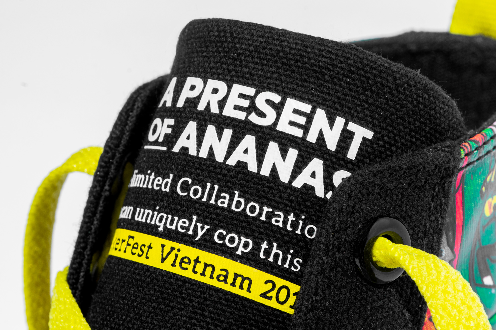

SNEAKER FEST VIETNAM VÀ SỰ KẾT HỢP
- ANANAS PEEPING PATTAS -
Có mặt tại Sneaker Fest Vietnam 2019, Ananas hân hạnh giới thiệu đến bạn một phát hành mang tên Ananas Peeping Pattas - bản collab giới hạn đặc biệt đánh dấu cho lần đầu hợp tác giữa hai bên. Dáng giày Vulcanized High Top của Ananas được lựa chọn trong thiết kế và cảm hứng bắt nguồn từ linh vật Peeping - đại diện cho tinh thần xuyên suốt 6 năm qua của Sneaker Fest Vietnam, chúng tôi tự tin đây sẽ là sản phẩm đáng mong chờ cho mọi “đầu giày” vào mùa hè 2019 này.
Với số lượng phát hành giới hạn chỉ 50 đôi, cộng với việc các chi tiết sản phẩm, packaging của Ananas Peeping Pattas đều được "chăm chút" với các ý tưởng mới, khác biệt so với những phiên bản trước đây từ Ananas càng làm cho bản collab trở nên đặc biệt.
Về tổng thể, bộ đế cao su All white tối giản làm phần nền vững chắc và tạo điểm nhấn cho phần Upper bên trên có phần phức tạp. Chất liệu vải canvas 10oz cao cấp màu Black được sử dụng bao quanh bức tranh đầy màu sắc, trải dài và phủ toàn bộ phần má và cổ giày. Gương mặt Peeping (linh vật quen thuộc của các kì Sneaker Fest VietNam) trở nên nổi bật hơn bao giờ hết khi được sử dụng 2 màu black&white ngay tại trung tâm artwork. Bản collab đem lại cho người nhìn cảm giác về một thế hệ trẻ cá tính, có phần nổi loạn nhưng cũng rất tích cực trong hành trình tìm kiếm và khẳng định bản thân.
Thiết kế mang "linh hồn của Sneaker Fest Vietnam với linh vật đại diện Peeping làm trung tâm
ANANAS PEEPING PATTAS - LIMITED COLLABORATION CHỈ PHÁT HÀNH VỚI SỐ LƯỢNG 50 ĐÔI
Một điểm đặc biệt của Ananas Peeping Pattas cần phải kể đến là dòng chữ “cộp mác riêng” của bản collab Ananas x Sneaker Fest Vietnam được in 3D trên lưỡi gà mà bạn không thể tìm được ở bất cứ đâu khác. Nội dung in với kích thước vừa vặn cùng điểm nhấn màu vàng bắt mắt đủ tô điểm cho đôi giày thêm ấn tượng và làm tự hào bất cứ ai sở hữu chúng.
Heel Strap với số thự tự được thêu chính xác từng đường kim, mũi chỉ
Để nhấn mạnh sự đặc biệt của mỗi sản phẩm, phần Heel Strap của từng đôi được thêu rõ nét số thứ tự từ 1 đến 50 với màu chỉ Butter trùng với màu dây chính. Phiên bản cũng có thêm 1 bộ dây màu Black đơn giản đi kèm để khách hàng có thể thay đổi theo hoàn cảnh. Với những chi tiết thiết kế này, chúng tôi muốn gửi gắm yếu tố "duy nhất" lên mỗi đôi giày để người sở hữu sẽ cảm thấy mình thật đặc biệt.
BẠN LÀ NGƯỜI DUY NHẤT ĐƯỢC UNBOX NẾU SỞ HỮU SẢN PHẨM
Ý tưởng packaging của Ananas Peeping Pattas lần này tạo nên những chiếc hộp mang một dáng hình khác biệt so với những chiếc hộp Ananas thường thấy. Sự tương phản lại một lần nữa được sử dụng, khi thiết kế tối giản bởi các pattern được in màu white trên nền giấy kraft có nhiệm vụ tạo spotlight cho chiếc Seal niêm phong và tem đánh số thứ tự trên mỗi hộp giày. Sở hữu chúng đồng nghĩa với việc bạn lại một lần nữa trở nên duy nhất trong lúc “bóc tem”, đập hộp. Ngoài ra, tem chống ẩm Micro-Pak từ nguyên liệu tái chế (recyclable) thân thiện môi trường lần đầu tiên được chúng tôi sử dụng cho phiên bản này.

Hộp giày được dán Seal kỹ lưỡng và tem chống ẩm Micro-Pak® lần đầu tiên được sử dụng
Ananas Peeping Pattas sẽ mở bán 01 ngày duy nhất tại sự kiện Sneaker Fest Vietnam 2019, Nhà Thi Đấu Nguyễn Du, 116 Nguyễn Du, Quận 1, TP.HCM:
- Số lượng giới hạn chỉ 50 đôi
- Size run: 37 - 43
- Giá retail: 1.000.000 đ
- Hình thức mua hàng: First come first serve
- Thời điểm phát hành: 9h30 ngày 21/07/2019
Còn bạn, bạn sẽ làm gì để trở thành 1 trong 50 người sở hữu đôi giày đặc biệt này? Chúng tôi đợi bạn tại gian hàng Ananas, khu vực S2 - Sneaker Fest Vietnam 2019.